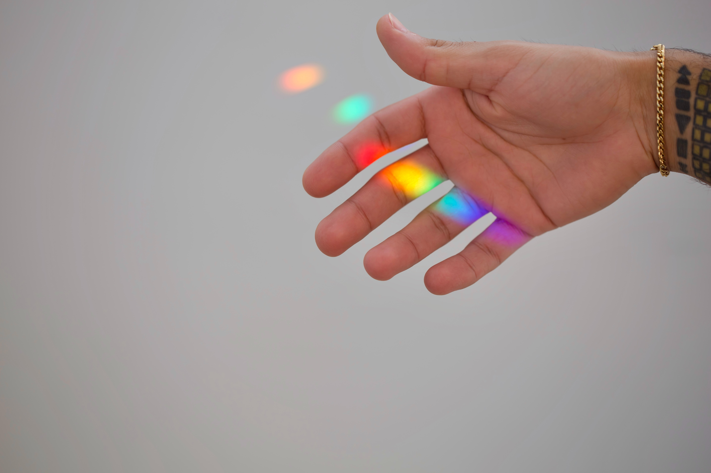
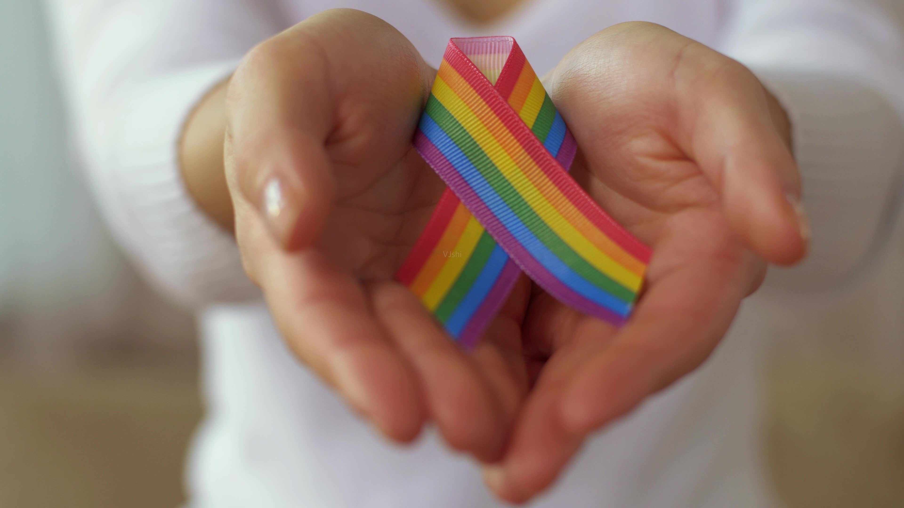

一、序言
Chaya是个极端正统的犹太女同性恋。
还在上学的时候，她便告诉拉比（老师、智者的象征）她是同性恋，但被回复“这只是一个阶段，很多女孩都经历过”。
12岁时，她发现自己是同性恋，拉比说长大以后就好了。
随着一点点长大，同学开始叫她同性恋，尽管她没有再做与之相关的事。
16岁时，她下了很大决心，决定告诉妈妈。而妈妈只是直直地盯着她看，然后收回目光。
在那之后她们再也没有讨论过这件事。
不久后，父母开始为她安排婚姻，家人们纷纷参与其中，除了她自己。
一次，核实了男方背景，于是被大家期望能够结婚，包括她自己，因为婚姻这个被承认的关系能够带来归属感。
在结婚之前，她看上了一个女孩，彼此保守秘密，直至结婚后才说出来。
婚后不久她便怀孕了，而在没有生下孩子之前服用避孕药得寻求拉比的原谅，但她认为在没有生两个孩子之前便去问拉比是不可思议的。
因为被期望生8-9个孩子，所以她一直在怀孕，但内心的情感也在慢慢膨胀。
直到有一天，走到街上的一个小角落，她脑中再无杂念，大声喊出“我是同性恋！”
不久后她告诉了她的丈夫。她觉得她的丈夫早就知道，只是他更愿意相信那只是个潜在的欲望罢了。
她不知道她该做些什么，她已经有了孩子，建立了家庭，如果离婚，将失去一切。
所以，尽管违背了内心，她认为最好还是保持现状。

——根据现有数据，在241个已调查的国家（及其属地）或地区中，有171个已将同性恋非刑罪化，约占70%。
——我们或许会以为同性恋已经在世界范围内得到了普遍的认可，但其实，真正有宪法保护同性恋的国家却只有11个。
——很多国家虽然已经在法律上认同了同性恋的存在，但真正能做到用宪法保护同性恋合法权益的却不多。
——有的国家在不保护的同时甚至还存在行使权力的法律障碍，如限制言论自由和限制与性取向有关的民间社会组织登记或运作。
同性恋是什么？
同性恋即对同性的社会成员产生爱情和情欲倾向，具体可体现在思想、行为、情感和性行为等方面。
尽管同性恋并不是个新兴事物，但随着时间的推移和社会的发展，公众对于同性恋的接受程度在不断提高，相应的，也在影响着部分国家和地区对于同性恋的司法界定和认可程度。
国际上多以六色彩虹作为同性恋的指代标志。
二、现状：目前各国与同性恋有关的法律
根据现有数据，在241个已调查的国家（及其属地）或地区中，有171个已将同性恋非刑罪化，约占70%。
表1 2020年保护/犯罪占比情况
（注：1，“宪法保护”是指该国家或地区的宪法规定同性恋群体的存在不是犯罪；“广泛保护”是指同性恋群体的大多数权益得到保护；“就业保护”是指同性恋群体的就业等权益受到法律保护；“轻度保护”是指同性恋群体的极少数权益得到保护；除宪法保护外，其他三种程度均表示“未明文在宪法中规定同性恋群体的存在不是犯罪”，但我们依然将其视为合法。2，“中立”是指没有明确的法律条文规定同性恋群体的存在是合法或者是犯罪。下文同。）
单看此数据，我们或许会以为同性恋已经在世界范围内得到了普遍的认可，但其实，真正有宪法保护同性恋的国家却只有11个。
也就是说，很多国家虽然已经在法律上认同了同性恋的存在，但真正能做到用宪法保护同性恋合法权益的却不多。
有的国家在不保护的同时甚至还存在行使权力的法律障碍，如限制言论自由和限制与性取向有关的民间社会组织登记或运作。
表2 各国同性恋非刑罪化日期
在世界范围内，允许同性恋群体以婚姻的形式生活的国家有77个，约占32%。
在这77个国家中，其中有58个有明确的同性恋婚姻法律，而其他的19个国家只允许民事结合的存在。
这种民事结合虽然认同同性恋者可以以类似婚姻的形式生活在一起，但有的只是简单的注册。
相较于法律，这种形式对于同性恋群体的保护仍旧受到了很大的限制。
表3 2020年同性恋婚姻合法情况
除此之外，同性恋者如果想有孩子该怎么办？
据统计，54个国家允许同性恋伴侣共同收养或以第二父母收养孩子，还有5个国家只允许同性恋伴侣以第二父母收养孩子。而这个第二父母收养，必须要求同性恋伴侣中有一方与孩子有血缘关系。
这意味着，如果一对男性同性恋伴侣想要以第二父母收养孩子，就必须借一位女性子宫为他们生育孩子，也就是我们常说的代孕，同性恋婚姻合法化的背后，代孕现象也在不断增多。
除了认同同性恋的国家之外，还有68个国家或地区在法律上将同性恋视为犯罪。
埃及和伊拉克虽未在法律中认为其犯罪，但对他们而言，同性恋却是一种约定俗成的犯罪行为，还是会受到惩罚。
在这些认为同性恋是违法犯罪的国家中，有27个会判处同性恋者最高10年及以上监禁，11个国家甚至会判处同性恋者死刑。
在中国的法律中，十年以上长期徒刑一般适用于罪行比较严重，情节恶劣、人身危险性较大的罪犯，如危害国家安全罪、危害公共安全罪、侵犯公民人身权利等，往往这些都是情节恶劣和社会危害性较大的犯罪行为。
也就是说，这些国家，同性恋已经属于了一种情节十分恶劣的行为，一旦被发现，就会受到严酷的惩罚。
三、变化：近年来各国对同性恋的法律变迁
我们收集了2016年和2020年这两年194个国家和地区的数据作为对比。下图展现了2016年和2020年的对比情况。

图4 2016年和2020年变化对比
图中可以看按出来，南美洲、北美洲和欧洲三个洲的国家和地区，大多对同性恋群体持有开放态度。相对而言，亚洲、非洲和大洋洲的国家和地区在法律上对同性恋群体的保障程度较低。
图5 2016年和2020年保护程度对比
在同性恋合法性的变化上，2016年至2020年共有的194个国家和地区数据中，总共有51个发生了程度变化。其中，36个发生的是正向转变，即向着有利于同性恋群体合法权益的方向发展。但也有15个国家和地区的转变是不太有利的。
2016年至2020年，共有7个国家和地区的同性恋婚姻状况通过法律途径把同性恋婚姻合法化。中国台湾地区在2019年将同性恋婚姻设为合法化。
图6 同性恋婚姻合法状况
可以说，整体来看，世界在法律层面上对于同性恋群体的权益保障呈上升趋势。
四、趣闻：关于同性恋，你可能不知道的事
你知道国际同性恋网站吗？
国际男女同性恋联合会（ILGA）成立于1978年，是一个促进世界各地区女同性恋、男同性恋、双性恋、跨性别和双性人群体共同争取平权的国际组织。
ILGA现在拥有超过1100个团体会员，分布在六大地区的110多个国家，组织愿景为确保任何人不分其性倾向、性别认同、性别表达和性征，都能享有自由平等的人权，并致力于实现这样一种全球正义和平权的世界。
你知道有哪些品牌公开支持同性恋吗？
除了各国同性恋的法律各不相同外，世界上各大品牌对于同性恋也持有不同的态度。
2019年1月18日，星巴克中国发微博称“爱的颜色不止一种”，并配图各式各样的彩虹杯，之后又在其官方公众号推荐彩虹杯，文案则是“无所畏惧的勇敢派：爱就要爱的像彩虹一样绚烂”；“我们用彩虹来诠释这带着骄傲与包容的爱，推出全新系列星杯”，公开表示支持同性恋群体。
但其实，早在2012年，星巴克就表态支持美国华盛顿州的同性婚姻合法化了。
2014年，星巴克又在致敬母亲节的广告中加入了“两个妈妈”的画面。
2016年，星巴克更是将彩虹旗挂在了公司总部西雅图的大楼上。
2016年，麦当劳在台湾推出的广告中，儿子在麦当劳的纸杯上写道“我喜欢男生”，父亲补充了“接受你”，即“我接受你喜欢男生”，表达了对儿子性取向的包容与支持，也体现了麦当劳对同性恋群体的态度。
2014年，苹果CEO库克在《商业周刊》网站发表文章称，身为同性恋者我感到很自豪。“多年来，我向许多人公开了我的性取向。苹果的许多同事也知道我是一个同性恋者，但他们对待我的态度没有什么不同。我认为，成为一名同性恋者是上帝赐予我的最伟大的礼物。”
2015年，库克和8000名苹果员工参加了在旧金山举行的第43届同性恋游行，来庆祝同性婚姻在全美的合法化。
你知道同志（同性恋）村吗？
同志村，英文上常以Gay village或gayborhood表示。
一般来说是指有大量同志(Gay)、蕾丝边（Lesbian）、双性恋、跨性别等人口居住或活动的地区。
同志村通常有商家因应同志市场而设立大批的同志设施，比如像同志夜店、澡堂、餐厅、书店等等。
典型的同志村可以在一个城镇中的高档或潮流地区中发现，然而这些同志村往往也可以在城市中劳动阶级居住的地区找到。
同志村广泛地散布在世界各国的各个城市之中。如美国的旧金山、加拿大的蒙特利尔、英国的曼彻斯特等等。
五、走近：你真的了解同性恋吗？
同性恋是一种疾病吗？
长期以来，同性恋一直被视为一种“不正常”的行为，被看作是一种疾病。
1970年，精神病学家罗伯特·希斯开展了一项实验，通过电击的方式去治疗所谓的同性恋“病人”。
这种所谓的电击疗法，是通过一边唤起同性恋的性欲一边用电击打击从而形成条件反射，让同性恋对自己的性行为感到生理恐惧和害怕，从而转为"正常"，然而这种治疗除了给人留下心理阴影外，对于性取向的转变没有丝毫作用。
1973年，美国心理学协会和美国精神医学会将同性恋从疾病分类系统中去除。
1990年，世界卫生组织正式将同性恋从疾病名册中去除，认为同性性倾向乃人类性倾向的其中一种正常类别，同性恋不是一种疾病或不正常，且无需接受任何形式的治疗。
2001年，中国也将同性恋从精神疾病分类中删除。
因此，请注意：同性恋根本不是一种疾病，性取向一旦成型绝不可能改变，没有任何科学依据证明改变性取向的可行性。
性取向受到哪些因素的影响？
准确来说，一个人的性取向由先天的基因和后天的环境共同决定的，基因能够影响性取向，但不完全是决定因素。
总体看来，决定性取向的生理性因素远大于后天环境因素，性取向既不会任意选择，也不会轻易改变。
无论如何，性取向一旦形成，就会是持久稳定的，不可改变的。
为什么会有“恐同”现象？
同性恋不是一种疾病，但社会中的恐同现象却时有发生。歧视同性恋的行为从未停止过。
歧视的理由大概有这两点，第一，人们认为同性恋是艾滋的传播者。
根据2020年预防艾滋病最核心信息显示，我国新诊断报告艾滋病感染者中，95%以上通过性途径感染，其中异性传播约占70%，男性同性性行为者每100人中约有8人感染艾滋病，也就是说，虽然同性恋中患艾滋的比例较异性恋高，但异性恋始终还是占了大头，艾滋归根到底与不安全的性行为有关。
其次，国内恐同的另一个理由就是担心同性恋不能传宗接代，中国人的传统观念就是子孙满堂，很多父母担心自己的子女是同性恋，担心他们以后没有孩子，受人鄙视，因此与子女闹翻。而他们的同性恋子女，承受着这种“爱”，为了父母安心，同妻或同夫便出现了，为了“传宗接代”和父母，有的同性恋者便无奈选择进入异性婚姻，在这种形式婚姻中，不仅是对同妻同夫的不负责，有时还会伤害到他们，冷落、漠视、家庭暴力等围绕在他们身边，没有感情的婚姻最终只会是一场悲剧。
除了中国，俄罗斯自从普京上任后也开启了恐同时代，他们比起中国，对同性恋的手段更为严厉，他们认为同性恋会失去战斗民族的血性，降低生育率，因此严厉打击同性恋，然而这依然阻止不了同性恋的出现，而他们的生育率也并没有因此好转。
由此可见，同性恋并不会降低生育率。
六、结语
近年来，世界在法律层面上，对同性恋的包容度总体来说有所提高，对同性恋群体的相关权利保障和社会保障层面也逐步提升——这是文化、社会等众多因素相互作用的结果。对于同性恋群体来说，这确实是一个好消息。
对于我们所有人，都应该认识到这样的一个事实：同性恋不是疾病，只是一种性取向。除此之外，他们也一样是普通人。
对于社会中与同性恋相关的一些矛盾，或许我们也该思考，就算同性恋群体消失，这种情况就会有所改变吗？
对于“同性恋的存在”这个话题，也许“合法化”是世界的大体一种趋势。不过，人们包容度的提高也需要时间。
